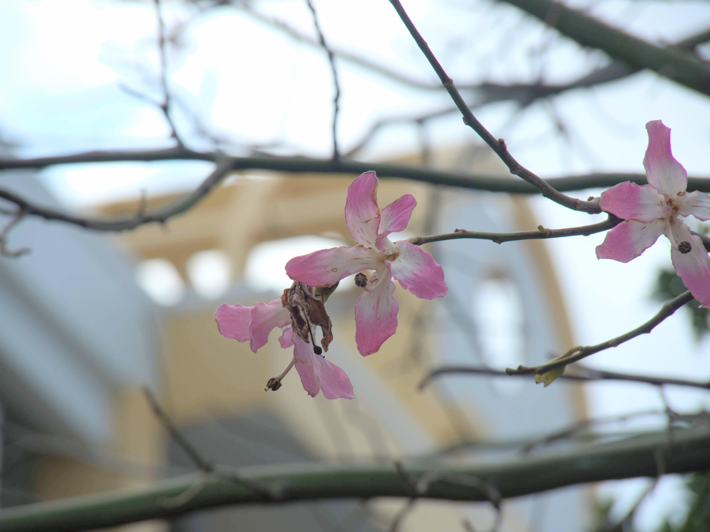

OKIUGO
Top
Building 3
Building 5
Building 9
Building 13
５号館
５号館について
5号館には自由に座ることができる多目的スペースがあり、いつも学生が集まっています。
講義に使われるコンピューター室や階段教室などがあり、空きコマなどに課題に取り組む学生も多くいます。
いつも何気なく訪れている5号館のおすすめスポットを紹介します。
5階と6階の間の階段から見える穴場夜景スポット
普段はあまり行くことのない6階ですが行ってみるときれいな夜景を見ることができます。
トックリキワタ
10月から12月が見ごろのトックリキワタの花であり、沖縄では南米桜と呼ばれています。
